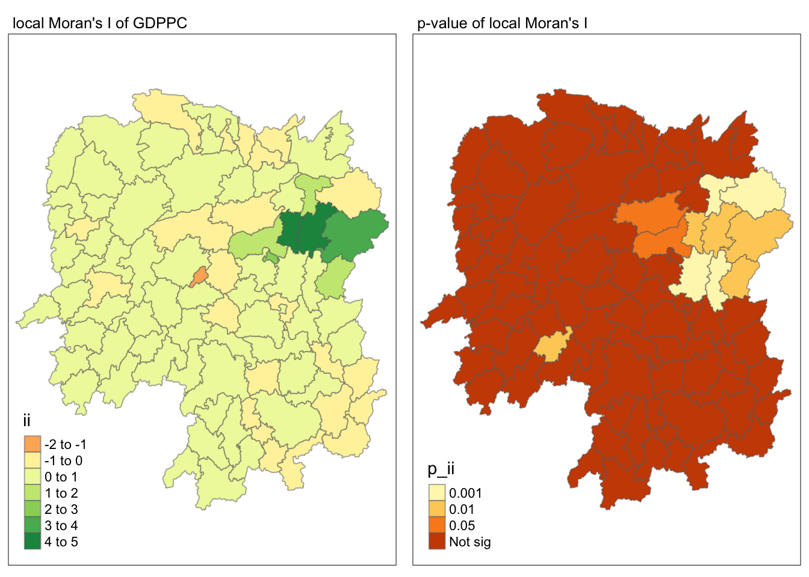

pacman::p_load(sf, sfdep, tmap, tidyverse)In-class Exercise 2: GLSA
Overview
This introduces sfdep functions for analysis related to Global and Local Measures of Association.
Getting Started
Four R packages will be used for this in-class exercise are: sf, sfdep, tmap, tidyverse, and knitr.
sf - for processing geospatial data
sfdep - provides tools Emerging Hot Spot Analysis
tmap - for generating thematic maps
tidyverse - for processing aspatial data
Preparing the data
Next we move the provided data from E-learn under the data/ directory. We will also create `rds/` directory for saving the calculated data for later use.
Importing the data
First, we will import the geospatial data in shp format.
hunan = st_read(dsn = "data/geospatial",
layer = "Hunan")Reading layer `Hunan' from data source
`/Users/kjcpaas/Documents/Grad School/ISSS624/Project/ISSS624/In-class_Ex2/data/geospatial'
using driver `ESRI Shapefile'
Simple feature collection with 88 features and 7 fields
Geometry type: POLYGON
Dimension: XY
Bounding box: xmin: 108.7831 ymin: 24.6342 xmax: 114.2544 ymax: 30.12812
Geodetic CRS: WGS 84Second, we import the aspatial data Hunan_2012, which contains the GDP Per Capita (GDPPC) of Chinese counties in 2012.
hunan2012 = read_csv("data/aspatial/Hunan_2012.csv")Combining them all together
As seen from the import above, each of the dataframes have 88 rows each. Each row corresponds to a record per county.
However, we are already interested in the following columns:
County
GDPPC
hunan <- left_join(hunan, hunan2012)%>%
select(7, 15)
Note
We do not need to specify the columns to join as both dataframes have the County column so left_join() is able to detect that this is the column to join by.
Plotting a choropleth map
Next is to plot the map of GDP per capita values.
tmap_mode("plot")
tm_shape(hunan) +
tm_fill("GDPPC",
style = "quantile",
palette = "Blues",
title = "GDPPC") +
tm_borders(alpha = 0.5) +
tm_layout(main.title = "GDP per capita by county in China (2012)",
main.title.position = "center",
main.title.size = 1.0,
legend.height = 0.35,
legend.width = 0.35,
frame = TRUE) +
tm_compass(type="8star", size = 2) +
tm_scale_bar() +
tm_grid(alpha =0.2)Global Measures of Spatial Association
Deriving Contiguity Weights: Queen’s Method
wm_q <- hunan %>%
mutate(nb = st_contiguity(geometry),
wt = st_weights(nb,
style = "W"),
.before = 1)
wm_qSimple feature collection with 88 features and 4 fields
Geometry type: POLYGON
Dimension: XY
Bounding box: xmin: 108.7831 ymin: 24.6342 xmax: 114.2544 ymax: 30.12812
Geodetic CRS: WGS 84
First 10 features:
nb
1 2, 3, 4, 57, 85
2 1, 57, 58, 78, 85
3 1, 4, 5, 85
4 1, 3, 5, 6
5 3, 4, 6, 85
6 4, 5, 69, 75, 85
7 67, 71, 74, 84
8 9, 46, 47, 56, 78, 80, 86
9 8, 66, 68, 78, 84, 86
10 16, 17, 19, 20, 22, 70, 72, 73
wt
1 0.2, 0.2, 0.2, 0.2, 0.2
2 0.2, 0.2, 0.2, 0.2, 0.2
3 0.25, 0.25, 0.25, 0.25
4 0.25, 0.25, 0.25, 0.25
5 0.25, 0.25, 0.25, 0.25
6 0.2, 0.2, 0.2, 0.2, 0.2
7 0.25, 0.25, 0.25, 0.25
8 0.1428571, 0.1428571, 0.1428571, 0.1428571, 0.1428571, 0.1428571, 0.1428571
9 0.1666667, 0.1666667, 0.1666667, 0.1666667, 0.1666667, 0.1666667
10 0.125, 0.125, 0.125, 0.125, 0.125, 0.125, 0.125, 0.125
County GDPPC geometry
1 Anxiang 23667 POLYGON ((112.0625 29.75523...
2 Hanshou 20981 POLYGON ((112.2288 29.11684...
3 Jinshi 34592 POLYGON ((111.8927 29.6013,...
4 Li 24473 POLYGON ((111.3731 29.94649...
5 Linli 25554 POLYGON ((111.6324 29.76288...
6 Shimen 27137 POLYGON ((110.8825 30.11675...
7 Liuyang 63118 POLYGON ((113.9905 28.5682,...
8 Ningxiang 62202 POLYGON ((112.7181 28.38299...
9 Wangcheng 70666 POLYGON ((112.7914 28.52688...
10 Anren 12761 POLYGON ((113.1757 26.82734...Computing Global Moran’s I
moranI <- global_moran(wm_q$GDPPC,
wm_q$nb,
wm_q$wt)
glimpse(moranI)List of 2
$ I: num 0.301
$ K: num 7.64Performing Global Moran’s I test
Tip
This is preferred over just calculating the statistic.
global_moran_test(wm_q$GDPPC,
wm_q$nb,
wm_q$wt)
Moran I test under randomisation
data: x
weights: listw
Moran I statistic standard deviate = 4.7351, p-value = 1.095e-06
alternative hypothesis: greater
sample estimates:
Moran I statistic Expectation Variance
0.300749970 -0.011494253 0.004348351 Performing Global Moran’s I test
Tip
This is the ideal method in practice.
set.seed(1234)
global_moran_perm(wm_q$GDPPC,
wm_q$nb,
wm_q$wt,
nsim = 99)
Monte-Carlo simulation of Moran I
data: x
weights: listw
number of simulations + 1: 100
statistic = 0.30075, observed rank = 100, p-value < 2.2e-16
alternative hypothesis: two.sidedComputing local Moran’s I
lisa <- wm_q %>%
mutate(local_moran = local_moran(
GDPPC, nb, wt, nsim = 99),
.before = 1) %>%
unnest(local_moran)
lisaSimple feature collection with 88 features and 16 fields
Geometry type: POLYGON
Dimension: XY
Bounding box: xmin: 108.7831 ymin: 24.6342 xmax: 114.2544 ymax: 30.12812
Geodetic CRS: WGS 84
# A tibble: 88 × 17
ii eii var_ii z_ii p_ii p_ii_sim p_folded_sim skewness
<dbl> <dbl> <dbl> <dbl> <dbl> <dbl> <dbl> <dbl>
1 -0.00147 0.00177 0.000418 -0.158 0.874 0.82 0.41 -0.812
2 0.0259 0.00641 0.0105 0.190 0.849 0.96 0.48 -1.09
3 -0.0120 -0.0374 0.102 0.0796 0.937 0.76 0.38 0.824
4 0.00102 -0.0000349 0.00000437 0.506 0.613 0.64 0.32 1.04
5 0.0148 -0.00340 0.00165 0.449 0.654 0.5 0.25 1.64
6 -0.0388 -0.00339 0.00545 -0.480 0.631 0.82 0.41 0.614
7 3.37 -0.198 1.41 3.00 0.00266 0.08 0.04 1.46
8 1.56 -0.265 0.804 2.04 0.0417 0.08 0.04 0.459
9 4.42 0.0450 1.79 3.27 0.00108 0.02 0.01 0.746
10 -0.399 -0.0505 0.0859 -1.19 0.234 0.28 0.14 -0.685
# ℹ 78 more rows
# ℹ 9 more variables: kurtosis <dbl>, mean <fct>, median <fct>, pysal <fct>,
# nb <nb>, wt <list>, County <chr>, GDPPC <dbl>, geometry <POLYGON [°]>Visualizing Moran’s I
In visualizing the Moran’s I values, plot using the ii column.
tmap_mode("plot")
tm_shape(lisa) +
tm_fill("ii") +
tm_borders(alpha = 0.5) +
tm_view(set.zoom.limits = c(6,8)) +
tm_layout(main.title = "local Moran's I of GDPPC",
main.title.size = 0.8)Visualizing p-value of Moran’s I
To visualize the p-value, plot using p_ii_sim.
Warning
These are from simulation results
tmap_mode("plot")
tm_shape(lisa) +
tm_fill("p_ii_sim") +
tm_borders(alpha = 0.5) +
tm_layout(main.title = "p-value of local Moran's I",
main.title.size = 0.8)Visualizing local Moran’s I and p-value
tmap_mode("plot")
map1 <- tm_shape(lisa) +
tm_fill("ii") +
tm_borders(alpha = 0.5) +
tm_view(set.zoom.limits = c(6,8)) +
tm_layout(main.title = "local Moran's I of GDPPC",
main.title.size = 0.8)
map2 <- tm_shape(lisa) +
tm_fill("p_ii",
breaks = c(0, 0.001, 0.01, 0.05, 1),
labels = c("0.001", "0.01", "0.05", "Not sig")) +
tm_borders(alpha = 0.5) +
tm_layout(main.title = "p-value of local Moran's I",
main.title.size = 0.8)
tmap_arrange(map1, map2, ncol = 2)
Visualizing LISA map
lisa_sig <- lisa %>%
filter(p_ii < 0.05)
tmap_mode("plot")
tm_shape(lisa) +
tm_polygons() +
tm_borders(alpha = 0.5) +
tm_shape(lisa_sig) +
tm_fill("mean") +
tm_borders(alpha = 0.4)Hot Spot and Cold Spot Analysis
Computing local Gi* statistics
We need to compute the inverse distance weights first.
wm_idw <- hunan %>%
mutate(nb = st_contiguity(geometry),
wts = st_inverse_distance(nb, geometry,
scale = 1,
alpha = 1),
.before = 1)
wm_idwSimple feature collection with 88 features and 4 fields
Geometry type: POLYGON
Dimension: XY
Bounding box: xmin: 108.7831 ymin: 24.6342 xmax: 114.2544 ymax: 30.12812
Geodetic CRS: WGS 84
First 10 features:
nb
1 2, 3, 4, 57, 85
2 1, 57, 58, 78, 85
3 1, 4, 5, 85
4 1, 3, 5, 6
5 3, 4, 6, 85
6 4, 5, 69, 75, 85
7 67, 71, 74, 84
8 9, 46, 47, 56, 78, 80, 86
9 8, 66, 68, 78, 84, 86
10 16, 17, 19, 20, 22, 70, 72, 73
wts
1 0.01526149, 0.03515537, 0.02176677, 0.02836978, 0.01029857
2 0.01526149, 0.01601100, 0.01911052, 0.02327058, 0.01591694
3 0.03515537, 0.04581089, 0.04116397, 0.01208437
4 0.02176677, 0.04581089, 0.04637578, 0.01585302
5 0.04116397, 0.04637578, 0.01896212, 0.01351099
6 0.01585302, 0.01896212, 0.02710909, 0.01140718, 0.01080890
7 0.01621067, 0.01536702, 0.01133628, 0.01836488
8 0.01930410, 0.02675555, 0.02151751, 0.01076895, 0.02608065, 0.01519804, 0.01337412
9 0.01930410, 0.01651371, 0.01798519, 0.01473155, 0.03015561, 0.01612293
10 0.02737233, 0.01390810, 0.01458881, 0.02156771, 0.02419268, 0.02350470, 0.01784174, 0.01621545
County GDPPC geometry
1 Anxiang 23667 POLYGON ((112.0625 29.75523...
2 Hanshou 20981 POLYGON ((112.2288 29.11684...
3 Jinshi 34592 POLYGON ((111.8927 29.6013,...
4 Li 24473 POLYGON ((111.3731 29.94649...
5 Linli 25554 POLYGON ((111.6324 29.76288...
6 Shimen 27137 POLYGON ((110.8825 30.11675...
7 Liuyang 63118 POLYGON ((113.9905 28.5682,...
8 Ningxiang 62202 POLYGON ((112.7181 28.38299...
9 Wangcheng 70666 POLYGON ((112.7914 28.52688...
10 Anren 12761 POLYGON ((113.1757 26.82734...HCSA <- wm_idw %>%
mutate(local_Gi = local_gstar_perm(
GDPPC, nb, wt, nsim = 99),
.before = 1) %>%
unnest(local_Gi)
HCSASimple feature collection with 88 features and 12 fields
Geometry type: POLYGON
Dimension: XY
Bounding box: xmin: 108.7831 ymin: 24.6342 xmax: 114.2544 ymax: 30.12812
Geodetic CRS: WGS 84
# A tibble: 88 × 13
gi_star e_gi var_gi p_value p_sim p_folded_sim skewness kurtosis nb
<dbl> <dbl> <dbl> <dbl> <dbl> <dbl> <dbl> <dbl> <nb>
1 0.0416 0.0114 6.41e-6 0.0493 9.61e-1 0.7 0.35 0.875 <int>
2 -0.333 0.0106 3.84e-6 -0.0941 9.25e-1 1 0.5 0.661 <int>
3 0.281 0.0126 7.51e-6 -0.151 8.80e-1 0.9 0.45 0.640 <int>
4 0.411 0.0118 9.22e-6 0.264 7.92e-1 0.6 0.3 0.853 <int>
5 0.387 0.0115 9.56e-6 0.339 7.34e-1 0.62 0.31 1.07 <int>
6 -0.368 0.0118 5.91e-6 -0.583 5.60e-1 0.72 0.36 0.594 <int>
7 3.56 0.0151 7.31e-6 2.61 9.01e-3 0.06 0.03 1.09 <int>
8 2.52 0.0136 6.14e-6 1.49 1.35e-1 0.2 0.1 1.12 <int>
9 4.56 0.0144 5.84e-6 3.53 4.17e-4 0.04 0.02 1.23 <int>
10 1.16 0.0104 3.70e-6 1.82 6.86e-2 0.12 0.06 0.416 <int>
# ℹ 78 more rows
# ℹ 4 more variables: wts <list>, County <chr>, GDPPC <dbl>,
# geometry <POLYGON [°]>Visualizing Gi*
tmap_mode("plot")
tm_shape(HCSA) +
tm_fill("gi_star") +
tm_borders(alpha = 0.5) +
tm_view(set.zoom.limits = c(6,8))Visualizing p-value of HCSA
tmap_mode("plot")
tm_shape(HCSA) +
tm_fill("p_sim") +
tm_borders(alpha = 0.5)Visualizing local HCSA
tmap_mode("plot")
map1 <- tm_shape(HCSA) +
tm_fill("gi_star") +
tm_borders(alpha = 0.5) +
tm_view(set.zoom.limits = c(6,8)) +
tm_layout(main.title = "Gi* of GDPPC",
main.title.size = 0.8)
map2 <- tm_shape(HCSA) +
tm_fill("p_value",
breaks = c(0, 0.001, 0.01, 0.05, 1),
labels = c("0.001", "0.01", "0.05", "Not sig")) +
tm_borders(alpha = 0.5) +
tm_layout(main.title = "p-value of Gi*",
main.title.size = 0.8)
tmap_arrange(map1, map2, ncol = 2)Visualizing hot spot and cold spot areas
HCSA_sig <- HCSA %>%
filter(p_sim < 0.05)
tmap_mode("plot")
tm_shape(HCSA) +
tm_polygons() +
tm_borders(alpha = 0.5) +
tm_shape(HCSA_sig) +
tm_fill("gi_star") +
tm_borders(alpha = 0.4)Reflection
As I already spent a lot of time on the Hands-on Exercise, I rushed through this exercise as I am already familiar with the concepts.
I think I have to set a hard stop for my self in the in-class exercises after class so I can better use my energy. I have been so exhausted this work as I have been doing Hands-on Exercises daily the whole week until 2-3AM. This is not sustainable.